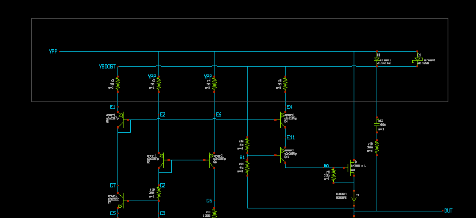
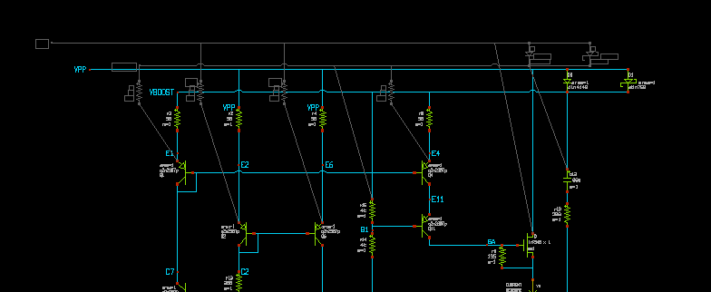
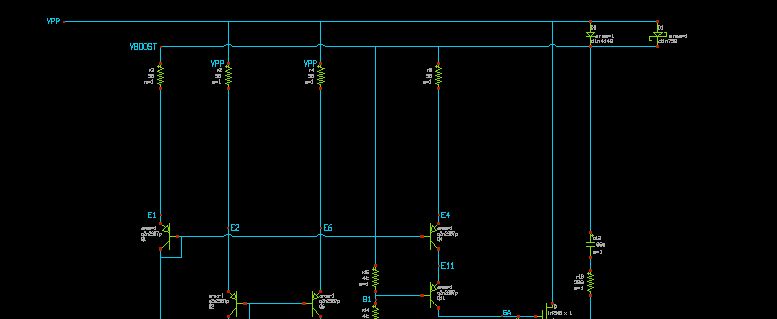

EDITOR COMMANDS
Most editing commands are available in the menu, but definitely key-bindings and Mouse actions are the most effective way to build and arrange schematics, so you should learn at least the most important ones.
The basic principle in XSCHEM is that first you select something in the circuit then you decide what to do with the selection. For example, if you need to change an object property you first select it (mouse click) and then you press the edit property ('q') key. It you need to move together multiple objects you select them (by area or using multiple mouse clicks with the Shift key), then you press the move ('m') key.
EDITOR COMMAND CHEATSHEET
This list is available in XSCHEM in the Help menu
XSCHEM MOUSE BINDINGS
----------------------------------------------------------------------
LeftButton Clear selection and select a graphic object
(line, rectangle, symbol, wire)
if clicking on blank area: clear selection
Shift+LeftButton Select without clearing previous selection
LeftButton drag Select objects by area, clearing previous selection
Shift+LeftButton drag Select objects by area, without clearing
previous selection
Ctrl+LeftButton drag Select objects by area to perform a
subsequent 'stretch' move operation
Shift+ Select objects by area without unselecting
Ctrl+LeftButton drag to perform a subsequent 'stretch' move operation
Mouse Wheel Zoom in / out
MidButton Unselect selected object
Shift+MidButton drag Unselect objects by area
RightButton drag Pan viewable area
LeftButton DoubleClick Edit property of object under the mouse,
else edit global schematic / symbol property string
RightButton DoubleClick If component selected Descend into it else return to
to parent schematic
XSCHEM KEY BINDINGS
----------------------------------------------------------------------
- BackSpace Back to parent schematic
- Delete Delete selected objects
- Insert Insert element from library
- Down Move down
- Escape Abort, redraw, unselect
- Left Move right
- Right Move left
- Up Move up
- ' ' Pan schematic
- '5' View only probes
- 'a' Make symbol from pin list of current schematic
ctrl 'a' Select all
shift 'A' Toggle show netlist
- 'b' Merge file
ctrl 'b' Toggle show text in symbol
- 'c' Copy selected obj.
ctrl 'c' Save to clipboard
ctrl 'd' Exit
ctrl 'e' Back to parent schematic
- 'e' Descend to schematic
Alt 'e' Edit selected schematic in a new window
shift 'F' Flip
ctrl 'f' Find/select by substring or regexp
- 'f' Full zoom
shift 'G' Double snap factor
- 'g' Half snap factor
ctrl 'g' Set snap factor
shift 'H' Follow http link (if symbol has 'url' property
- 'h' Attach net labels to selected instance
- 'i' Descend to symbol
Alt 'i' Edit selected symbol in a new window
shift 'J' Create symbol from pin list
alt+Shift 'J' Create labels with 'i' prefix from highlighted nets/pins
alt 'j' Create labels without 'i' prefix from highlighted nets/pins
ctrl 'j' Create ports from highlight nets
alt+ctrl 'j' Print list of highlighted nets/pins with label expansion
- 'j' Print list of highlighted nets/pins
- 'k' Hilight selected nets
shift 'K' Unhilight all nets
ctrl 'k' Unhilight selected nets
- 'l' Start line
shift 'L' Load schematic
- 'm' Move selected obj.
shift 'N' Hierarchical netlist
- 'n' Netlist
- 'o' Zoom out
- 'p' Pan
shift 'P' Pan, other way to.
alt 'q' Edit schematic file (dangerous!)
- 'q' Edit prop
shift 'Q' Edit prop with vim
ctrl 'q' View prop
shift 'R' Rotate
- 'r' Start rect
ctrl 's' Change element order
ctr+shift 'S' Save as symbol
shift 'S' Save schematic
Alt 's' Reload current schematic from disk
- 's' Save-as schematic
- 't' Place text
alt 'u' Align to current grid selected objects
shift 'U' Redo
- 'u' Undo
ctrl 'v' Paste from clipboard
shift 'V' Toggle spice/vhdl/verilog netlist
shift 'W' Highlight discrepancies between object ports and attached nets
- 'w' Place wire
ctrl 'x' Cut into clipboard
- 'x' New cad session
- 'y' Toggle stretching wires
- 'z' Zoom box
shift 'Z' Zoom in
ctrl 'z' Zoom out
- '?' Help
- '&' Check wire connectivity
shift '*' Postscript/pdf print
ctr+shift '*' Xpm/png print
alt+shift '*' Svg print
- '-' Test mode: change line width
- '+' Test mode: change line width
- '_' Toggle change line width
- '%' Toggle draw grid
- '=' Toggle fill rectangles
- '$' Toggle pixmap saving
- ':' Toggle flat netlist
STRETCH OPERATIONS
An important operation that deserves a special paragraph is the Stretch operation. There is frequently the need to move part of the circuit without breaking connections, for example to create more room for other circuitry or just to make it look better. The first thing to do is to drag a selection rectangle with the mouse holding down the Ctrl key, cutting wires we need to stretch:
After selection is done hit the move ('m') key. You will be able to move the selected part of the schematic keeping connected the wires crossing the selection rectangle:
In our example we needed to move up part of the circuit, the end result is shown in next picture. Multiple stretch rectangles can be set using the Shift key in addition to the Ctrl key after setting the first stretch area.
